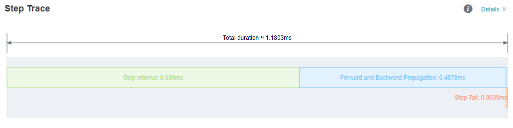
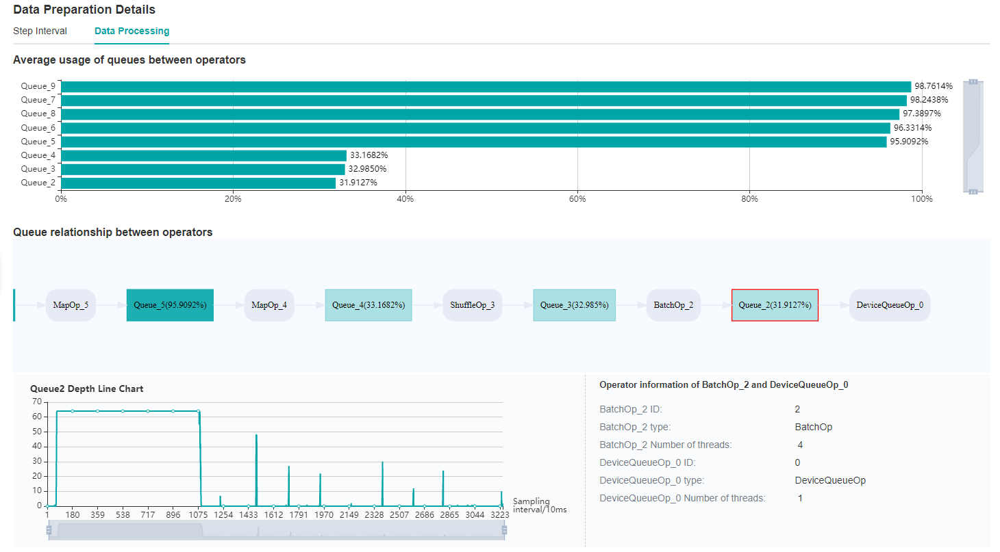
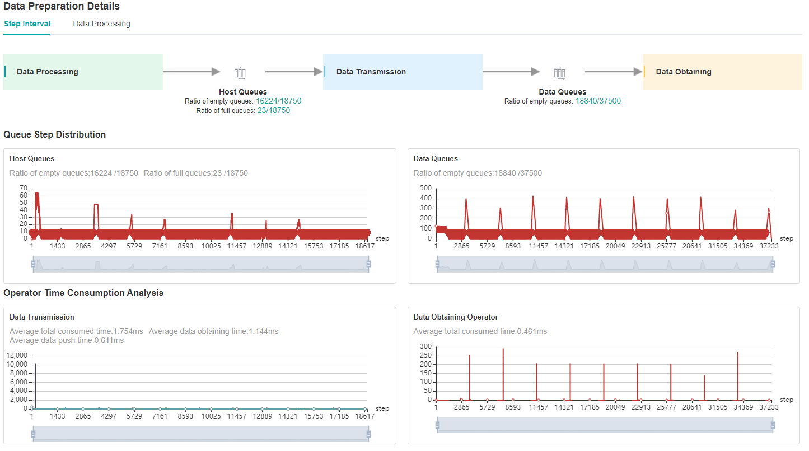
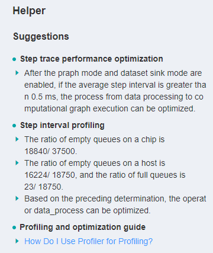
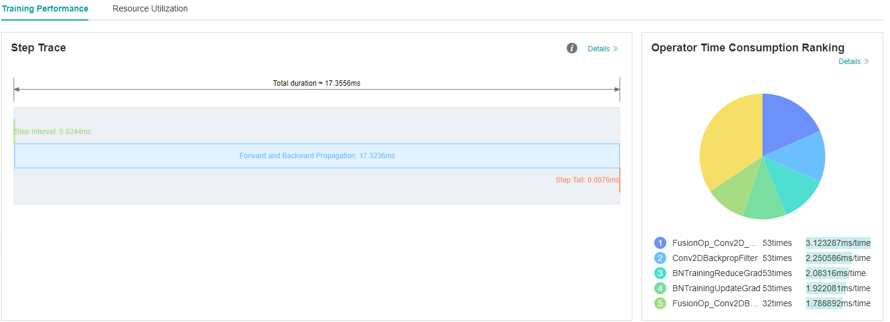
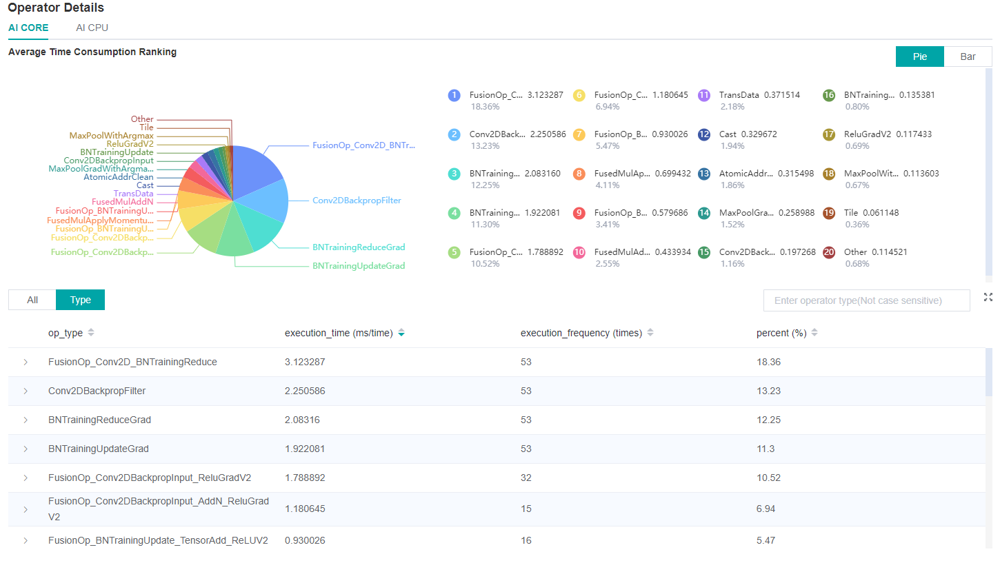
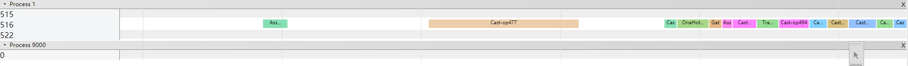

Using Performance Profiling Tool

Profiler provides performance tuning ability for MindSpore, and provides easy-to-use and rich debugging functions in operator performance, iteration performance, data processing performance, etc., helping users quickly locate and solve performance problems.
This chapter introduces the common methods and cases of performance tuning in neural networks, as well as the resolution of some common problems.
Quick Start
Please refer to the tutorials for the function introduction and instructions of MindSpore Profiler.
This section will introduce the common use of MindSpore Profiler through three typical cases.
Case 1: Long Step Interval
As you observed on the MindInsight UI page, the step interval in the Step Trace is too long, which may indicate that performance can be optimized in the dataset processing process.

Figure 1: Long Step Interval in Step Trace
Looking at the Data Preparation details at the bottom of the webpage, we can see that the ratio of full queues in Host Queue is low, which can be preliminarily determined that the performance related to dataset processing can be improved.
It could be a bottleneck of dataset operators or TDT channel transmission. Switch to the Data Processing page to check it.

Figure 2: Data Preparation Details – Step Interval

Figure 3: Data Preparation Details – Data Processing
By observing the Queue relationship between operators, we find that the average usage of Queue_3 and Queue_2 is relatively inefficient.
Therefore, it can be determined that we can adjust the corresponding dataset operators, ShuffleOp_3 and BatchOp_2, to achieve better performance. Then, you can adjust the training script based on this information.
You can also refer to the suggestion provided by the Helper on the left side of the home page to optimize the training script.

Figure 4: Helper
Case 2: Long Forward and Backward Propagation Interval Caused by Operations
When you find that the running time of steps is too long, you can first check the Step Trace to see if the time distribution of each part is normal.

Figure 5: Long FP/BP intervals in Step Trace
From the Step Trace in Figure 5, it is observed that the forward and backward propagation time is too long.
We can open the details page of Operator Time Consumption Ranking to further determine whether there are time-consuming operators, and judge whether there is optimization method to reduce the operator execution time.

Figure 6: Finding operators that can be optimized via the details page of Operator Time Consumption Ranking
Case 3: Long Forward and Backward Propagation Interval Caused by Operation Intervals
In case 2, we introduced the case of long execution time of operations. In addition, the long FP/BP time can also be caused by the long time intervals among operations.
To determine if there are long operation intervals, we can observe details of Timeline.
Click the Download button on the Timeline card in the right bottom of the UI page to download the timeline data.
After downloading is done, enter the address chrome://tracing in Google browser, upload or drag the downloaded file into the browser to load data.

Figure 7: Finding intervals between operations that can be optimized in Timeline.
If it is found that there is a large interval between operations, you can adjust the training script to optimize this section to further improve the performance.
FAQ
Startup Failure
If you encounter the error of startup failure, you can check whether you encountered one of the following situations:
There is no space left in the system, or the remaining space is too small to run profiling tool.
Mismatched versions of MindSpore and Ascend AI processor software package.